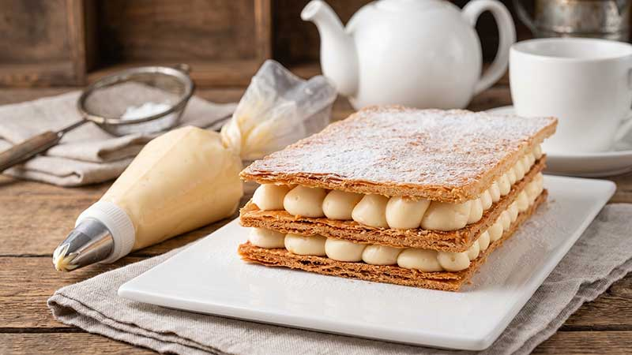

Torta Millefoglie Classica
Un grande classico della pasticceria internazionale. Tre strati di sfoglia caramellata e croccante alternati da una ricca e setosa crema diplomatica (o crema pasticcera), guarniti con gocce di cioccolato, amarene o granella di sfoglia.

Ingredienti
Per la Sfoglia:
- 3 rotoli di Pasta Sfoglia rettangolare (fresca o surgelata)
- q.b. Zucchero semolato (per la caramellizzazione)
- q.b. Zucchero a velo (per la finitura)
Per la Crema Diplomatica (Farcitura):
- 500ml di Latte intero
- 4 Tuorli d'uovo
- 120g di Zucchero semolato
- 45g di Amido di mais (maizena)
- 1 baccello di Vaniglia (o estratto)
- 250ml di Panna fresca da montare
- 30g di Zucchero a velo (per montare la panna)
Farcitura Aggiuntiva (Opzionale):
- 80g di Gocce di cioccolato fondente, amarene sciroppate o gocce di Nutella.
Procedimento
- Preparazione delle sfoglie: Srotola i rettangoli di pasta sfoglia su teglie foderate con carta forno. Bucherella bene tutta la superficie con le punte di una forchetta. Spolverizza abbondantemente con zucchero semolato.
- Cottura e caramellizzazione: Cuoci in forno ventilato a 200°C per circa 12-15 minuti finché dorate. Negli ultimi 2 minuti attiva il grill per far caramellare lo zucchero in superficie. Sforna e fai raffreddare completamente.
- Preparazione della crema pasticcera: Scalda il latte con la vaniglia. In una ciotola lavora i tuorli con lo zucchero e l'amido. Versa il latte caldo a filo mescolando, poi riporta sul fuoco a fiamma bassa e mescola finché la crema non si addensa. Versa in un recipiente, copri con pellicola a contatto e fai raffreddare prima a temperatura ambiente e poi in frigo.
- Crema diplomatica: Monta la panna fredda con lo zucchero a velo. Incorporala delicatamente alla crema pasticcera ormai fredda lavorando con movimenti dal basso verso l'alto.
- Assemblaggio: Posiziona la prima sfoglia sul piatto da portata. Con una sac-à-poche stendi uno strato generoso di crema diplomatica (e aggiungi eventuali gocce di cioccolato). Sovrapponi la seconda sfoglia, premi leggermente e farcisci con la restante crema.
- Chiusura e Decorazione: Adagia il terzo rettangolo di sfoglia. Pareggia leggermente i bordi rifilando eventuali irregolarità e spolverizza la superficie con un ricco strato di zucchero a velo.
💡 Note Finali e Consigli dell'Mastro Pasticcere
- Trucco per sfoglie croccanti: Spennellare un leggerissimo velo di cioccolato bianco fuso sopra le sfoglie critte prima di mettere la crema crea una barriera isolante che mantiene la sfoglia croccante per ore!
- Montaggio al momento: Assembla la millefoglie massimo 2-3 ore prima di servire per evitare che l'umidità della crema ammorbidisca eccessivamente la pasta sfoglia.
- Conservazione: Conservare in frigorifero per un massimo di 2 giorni.